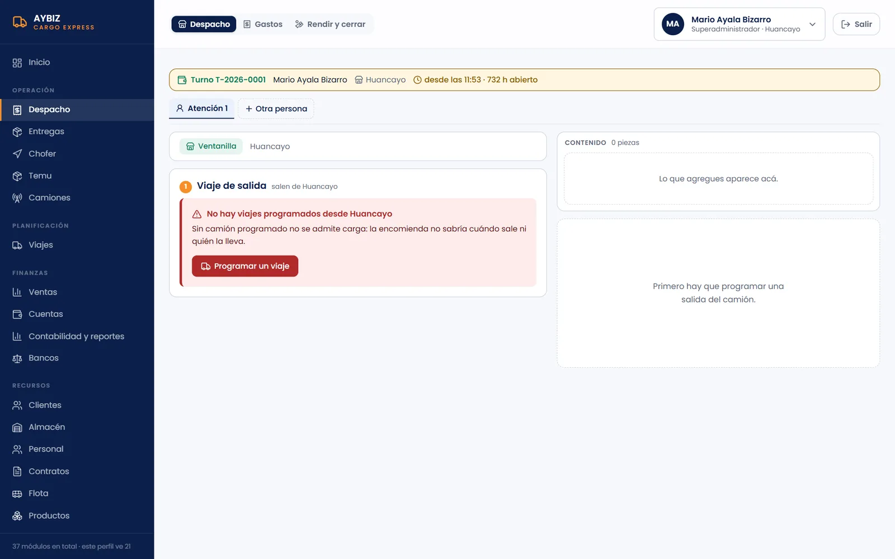
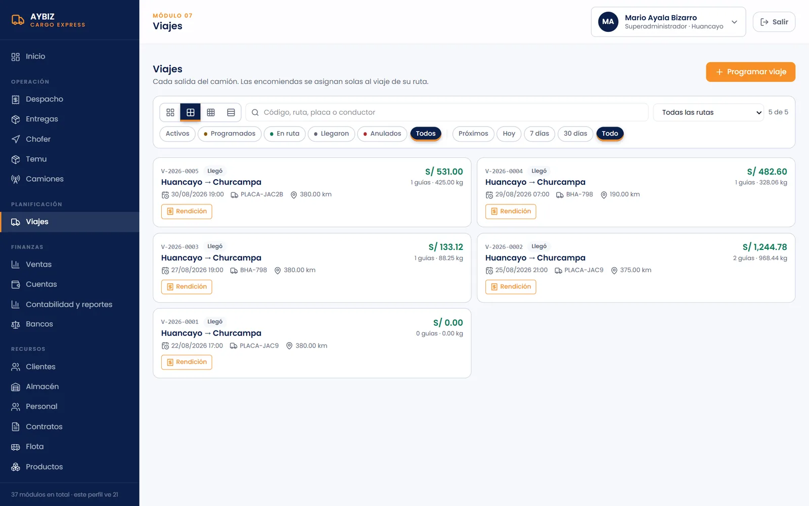
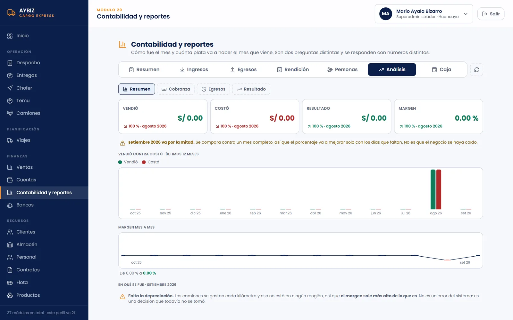
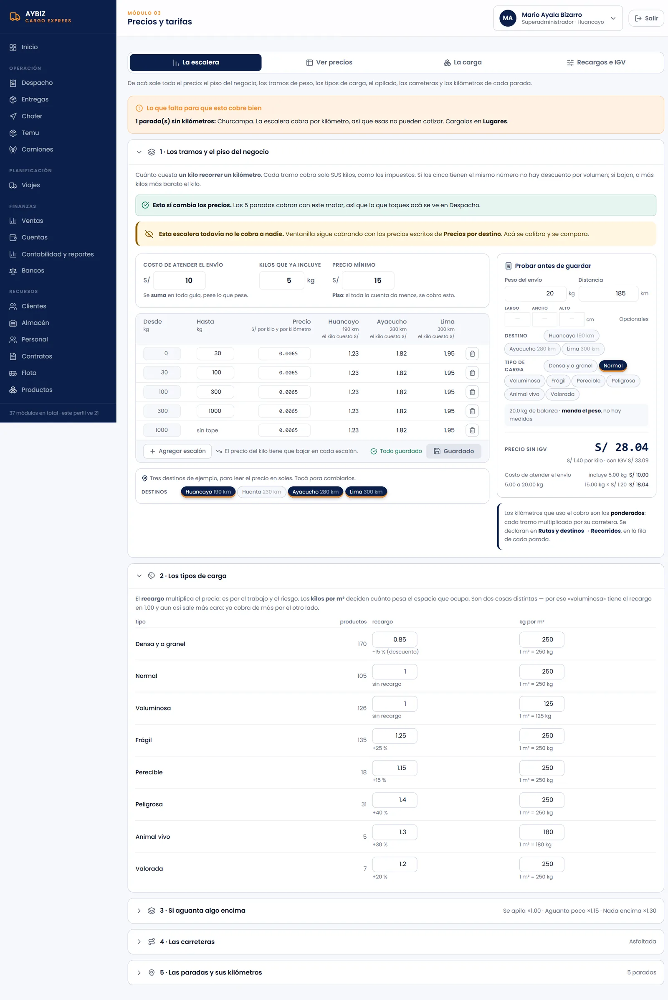
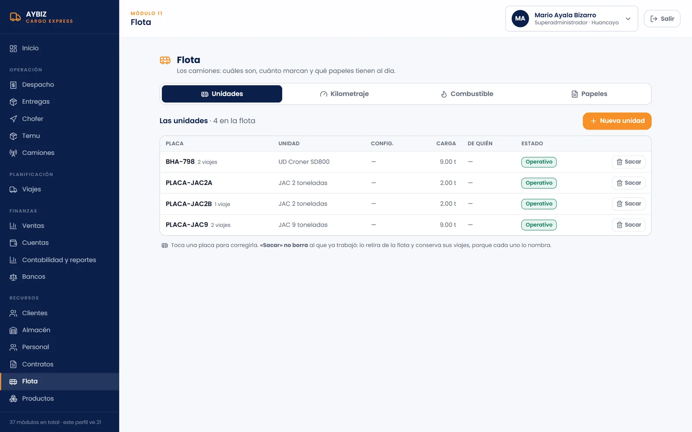
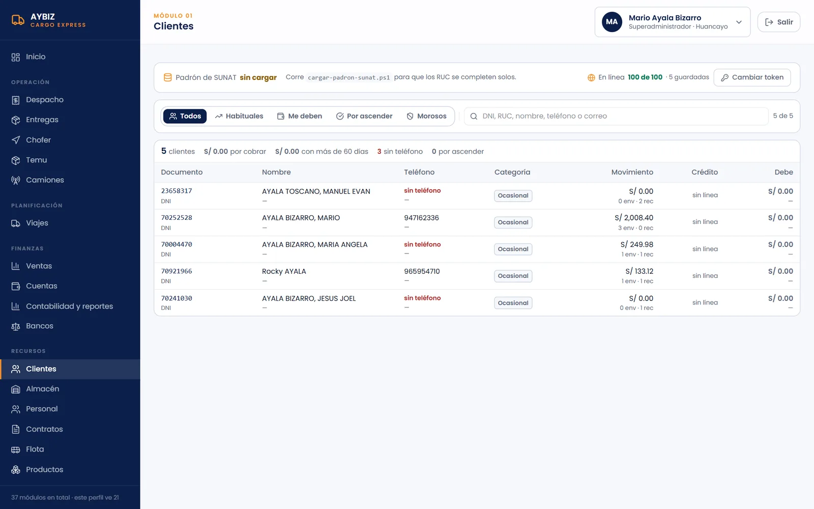
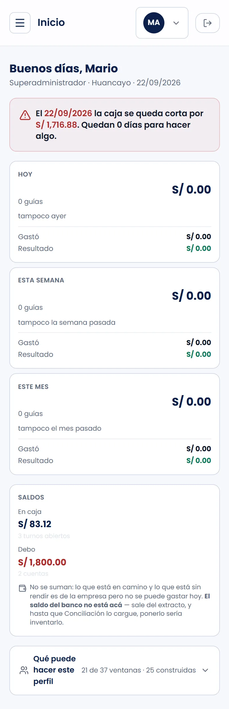
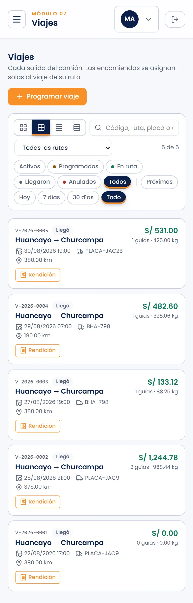

Ficha del proyecto
- Empresa
- AYBIZ Cargo Express, transporte de carga y encomiendas. Huancayo, Perú.
- Participación
- Desarrollo individual: base de datos, pantallas y publicación.
- Tecnologías
- React, Vite, Tailwind CSS, Supabase (PostgreSQL), Recharts para los gráficos y Cloudflare Pages para publicarlo.
- Periodo
- Desde agosto de 2026.
- Estado
- Terminado y en pruebas con datos ficticios, antes del piloto con la operación real.
Contexto
AYBIZ es la empresa de mi familia. Mueve encomiendas entre Huancayo, Ayacucho y Lima, con agencias en la ruta y choferes que cobran en la carretera, muchas veces sin señal. Conozco el negocio desde adentro, no por una entrevista.
Antes del sistema, cada agencia cerraba su caja del día en un formato de papel, el chofer liquidaba su viaje en otro formato, y la administración pasaba todo a un Excel de ingresos y egresos. Cuadrar cuánto había en caja y de quién era cada sol tomaba días.
El problema
- La misma encomienda se anotaba tres veces: en la agencia, en la guía del chofer y en el Excel.
- Nadie sabía en el momento cuánto dinero estaba en caja, cuánto iba en camino y cuánto faltaba rendir.
- Los precios se cotizaban de memoria; dos agencias podían cobrar distinto por el mismo envío.
- El cierre del mes dependía de una persona y de un archivo.
La solución
Un sistema web, en castellano, con un módulo por cada parte del trabajo. La regla que ordena todo es simple: una encomienda no se admite si no hay un camión programado. Sin viaje no hay carga, porque la encomienda no sabría cuándo sale ni quién la lleva.

Módulos principales
- Despacho y entregas. Registro de la encomienda en ventanilla y entrega en destino.
- Viajes y camiones. Cada salida del camión, con su ruta, placa, kilómetros y carga asignada.
- Rendición del chofer. Lo que cobró y gastó en la carretera, cuadrado contra el viaje.
- Ventas, caja y cuentas. Caja por turno, cuentas por cobrar y bancos.
- Contabilidad y reportes. Cuánto se ganó en el mes y cuánta plata va a haber el mes que viene.
- Tarifas. Una escalera de precios por kilo y por kilómetro, la misma para todas las agencias.
- Clientes, personal, contratos y flota.





Decisiones y por qué las tomé
| Decisión | Motivo |
|---|---|
| Las reglas viven en la base de datos, no en la pantalla | La pantalla anticipa el error, pero es PostgreSQL quien lo rechaza. Así una regla no se salta aunque alguien use otra pantalla. |
| Supabase como base de datos | Me da PostgreSQL, usuarios y permisos sin tener que administrar un servidor. La base son más de cien scripts SQL numerados que se corren en orden. |
| Entrar con DNI en vez de correo | Un chofer siempre tiene DNI; correo, a veces, y no se lo acuerda. El DNI está en su fotocheck. |
| Nada se borra: se retira, con motivo | Una guía cobrada no se puede tocar. Si hay un error, se cierra esa versión y se abre otra. Queda el rastro. |
| Todo en castellano, hasta el código | Quien mantenga esto va a ser alguien de Huancayo. Nombres de tablas, funciones y mensajes en el idioma del negocio. |
| Pruebas con datos ficticios antes del piloto | Encontrar los errores sin arriesgar la caja real. Los datos que se ven en las capturas son de prueba. |
Desde el celular
El chofer y el agente de ventanilla no trabajan en una computadora. Las pantallas se acomodan al celular: el menú se guarda en un botón y las tarjetas se apilan una debajo de otra.


Lo que falta
Lo escribo acá para no olvidarlo, no como excusa. Un sistema que no dice lo que le falta promete más de lo que hace.
- Permisos por rol: hoy, quien entra ve todos los módulos.
- La depreciación de los camiones no está en ningún renglón, así que el margen sale más alto de lo que es.
- Un pago por Yape se cuenta como cobrado sin confirmar que el dinero entró.
- Falta la conciliación con el banco.
- En el celular, la barra de pestañas de Contabilidad se superpone y no se puede tocar. Lo encontré al preparar estas capturas.
Qué aprendí
Que el trabajo grande no fue programar, sino entender los formatos de papel: el cierre de caja de la agencia y la liquidación del chofer son la fuente de todas las reglas del sistema. Y que una regla escrita en la base de datos vale más que diez avisos en pantalla.